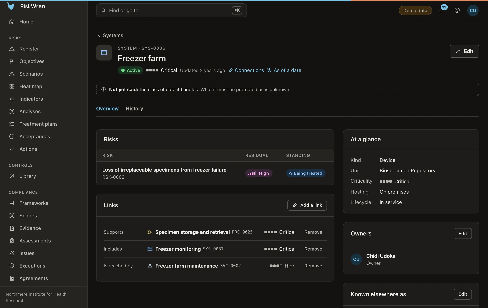
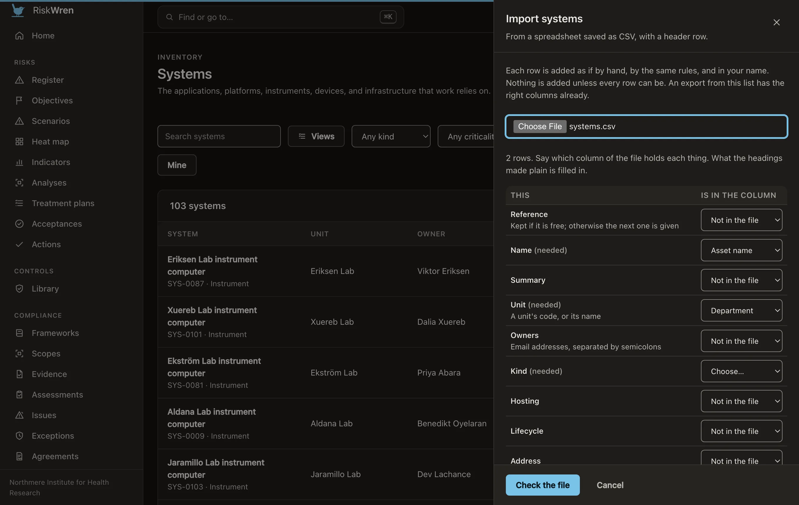
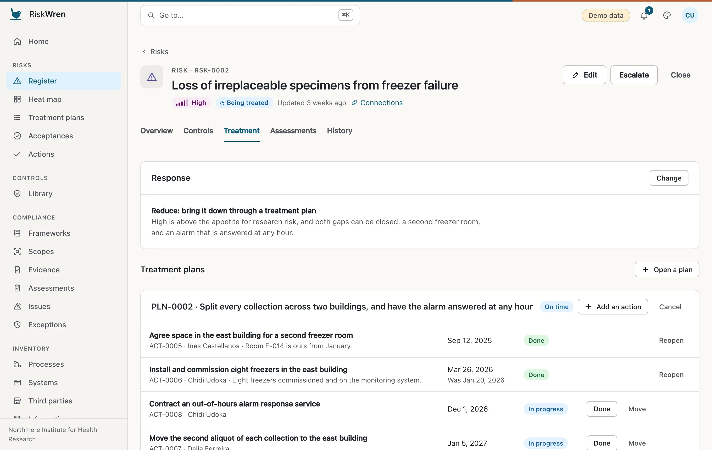

The register
This guide is for everyone who owns, assesses, or reads a risk. It covers the inventory, risks and their ratings, controls, what the controls suggest, treatment plans, and acceptance. What the organization is held to, and the proof that it meets it, is in Compliance.
RiskWren is one connected register. A system is recorded once and every risk that concerns it points at it. A control is described once and every risk it bears on leans on the same record, with the same rating of how well it works.
Home#
Home is the page for what you owe. Waiting on you lists, most urgent first, the things that need you in particular: an action that is yours, a risk of yours that has not been assessed or is due for review, a risk whose rating is in doubt, a risk that needs a decision, a control of yours to rate, an acceptance you gave that is about to expire, evidence of yours that has stopped counting or soon will, a test you have been asked to do, a result waiting for your review, an issue that is yours to put right, a closure waiting for you to confirm, an exception to decide or one of yours about to end, and, for those who can name a new owner, a record with nobody answering for it. Each item is a link to the place where it is done.
The bell at the top right counts what has been assigned to you or decided for you since you last looked. See Notices.
The figures above the list count the same things for everything you may see, and each opens the list it counts.


The inventory#
The inventory is what the organization has and depends on. It has four kinds of record:
| Record | What it is | Reference |
|---|---|---|
| Process | Something the organization does: a service a core provides, a clinical activity, payroll | PRC-0001 |
| System | What the work runs on: an application, a platform, an instrument, a device, a data store | SYS-0001 |
| Third party | Who it depends on: suppliers, service providers, collaborators, sponsors, subrecipients | TP-0001 |
| Information asset | A body of information it holds: what it is, where it is kept, and who it is shared with. The record describes the information and never contains it | INF-0001 |
Every record has a name, a unit, a criticality, the most sensitive class of data it touches, and named owners. Systems also say how they are hosted and where they are in their life: planned, in service, being retired, or unsupported.
The inventory is open to everyone signed in. A unit's steward or a manager adds records; owners and stewards keep them current.



Links#
A record says what it relies on:
| From | Link | To |
|---|---|---|
| Process | relies on | System |
| Process | is performed by | Third party |
| System | is supplied by | Third party |
| System | holds | Information asset |
| Process | uses | Information asset |
| Information asset | is shared with | Third party |
| Process or system | depends on · is part of | Another of the same kind |
A link is made once, from either end, and can be read from both. A lab can say that its work relies on central storage without anyone in central computing doing anything.
Connections#
Every record has a Connections link beside its name. It opens a picture of everything joined to the record: its links in both directions, the risks that bear on it, the controls that reduce them, the scopes it is in, and the evidence, issues, and exceptions about it. A list beside the picture says the same in full. See Connections.


Known elsewhere as#
A record can carry what it is called in other systems: an asset tag, a contract number, a ticket, an entry in a configuration database. Known elsewhere as → Edit on the record. Search finds a record by any of them, and where the system has an address pattern they are links.
Import and export#
Every list has an Export button. It gives the list as it is filtered, and as much of it as you may see, as a spreadsheet (CSV) or as data (JSON). Taking an export is recorded in the history.
A steward or a manager can Import processes, systems, third parties, information assets, risks, and controls from a spreadsheet saved as CSV:
- Choose the file. RiskWren reads its headings and matches them to fields where the names make it plain.
- Say which column holds anything it could not match. A unit is given by its code or its name, an owner by their email address, and a choice by its key or by the words you see in the app.
- Check the file. Every problem is listed with its row. Nothing has been added yet.
- Import, once every row is good.
Each row is added as if by hand, by the same rules, in your name. Nothing is added unless every row can be, and a file imported twice adds nothing the second time. A file exported from one installation imports into another with its references kept. A rating is never imported: what a file says of how a control works, or how much risk remains, is a judgment to be made here by a named person.



Owners#
Every record names the people who answer for it. An owner is accountable, a delegate acts for the owner day to day, and a contact knows the detail. Owners and delegates may edit the record.
When an owner's account is disabled, the record is not reassigned by guesswork. It is shown as having nobody answering for it, on Home for those who can name a new owner, until someone does.
History#
Every record has a History tab: who changed what, when, with each value before and after. Nothing in it can be edited or removed. See The history.
Risks#
Raise a risk#
Register → Raise a risk. Start from the library when you can, by searching it at the top of the form: it holds 57 common risks, written as a cause, an event, and a consequence, each with its category and the controls commonly used for it. Change the wording to fit; the library is a starting point, not a standard.
A risk needs a name, a category, and a unit. Say what it concerns by linking the processes, systems, and third parties involved, so that anyone looking at a system sees the risks that bear on it.
Assess it#
A risk carries up to three ratings, and each is a judgment recorded by a named person with a reason.
| Rating | The question it answers |
|---|---|
| Inherent | How much is at stake if the controls did not exist or did not work? |
| Residual | How much remains, with the controls as they actually work? |
| Target | Where should it be once the plan is done? |
To assess, choose a likelihood from 1 (rare) to 5 (almost certain) and an impact from 1 to 5 on each dimension that applies: mission, safety, financial, legal, and trust. Every level has a written definition, shown as you choose, so that two people rating the same thing reach the same answer. The overall impact is the highest level on any dimension, and the rating is read from the matrix: low, moderate, high, or critical.
A reason is required. An assessment is never edited: a new one supersedes it, and the earlier one stays in the Assessments tab with who made it and why.
Rating and standing#
These are two different things, and RiskWren always shows them apart.
- The rating says how much is at stake.
- The standing says whether the risk is in order.
| Standing | Meaning |
|---|---|
| Within appetite | The residual rating is at or below what the organization has said it will live with for this kind of risk |
| Being treated | Above appetite, with a plan that is active and on time |
| Accepted | Above appetite, and accepted by someone with the authority, until a date |
| Needs a decision | Above appetite, and neither treated nor accepted. This is what leaders should look at |
| Not assessed | No residual rating yet |
| Closed | No longer applies, and kept for the record |
A critical risk that is accepted is in order. A moderate one in a category with a low appetite, with no plan and no acceptance, is not.


Reviews#
Each risk has a next review date, sooner the more is at stake: by default every 3 months for critical, 6 for high, 12 for moderate, and 24 for low. A review is a new residual assessment, even when nothing has changed; say so in the reason. A risk past its date shows as overdue, on its page and on its owner's Home.
Escalate#
A steward or leader can escalate a risk to a unit above its own, with a reason. The risk stays where it is and keeps its owner; escalation says "this needs you" to the leader above, and puts it among the risks at that level.
Close#
Close a risk when it no longer applies, with the reason. It leaves the open register and stays findable, with its whole history.
Controls#
A control is something the organization does to make a risk less likely or less harmful. It has a statement of what is done, an owner, a unit, a kind (preventive, detective, corrective, or directive), and how often it happens.
Controls → Library is your organization's own controls. Add a control can start from a set of 75 common controls in plain words: search it, choose one, and then make it specific. The starting text says "backups are tested"; yours says which systems, how often, and by whom.
Rate a control#
What is known about a control is recorded as a rating with two parts and a note:
- Design: if it were done as described, would it work?
- Operation: is it actually done?
Each is effective, partly effective, or ineffective. The note says what was looked at. As with assessments, a rating is never edited, only superseded.
A control that has never been rated is not assessed, and a rating older than twelve months is out of date. Neither counts for anything until someone looks.
A rating by its owner or a steward is a judgment. A rating from a test in an assessment, recorded by someone who does not own the control and confirmed by a second person, outranks it: while a test result holds, the control cannot be re-rated by judgment. See Evidence and testing.
Link a control to a risk#
On the risk's Controls tab, link each control that bears on it and say how:
- what it reduces: likelihood, impact, or both;
- how much the risk leans on it: primary (the risk relies on it) or supporting (it helps).
A risk started from the library offers the controls commonly used for it.
What the controls suggest#
Once a risk has an inherent rating and linked controls, RiskWren shows the residual rating the controls suggest, with its working:
- Each control counts by how well it is known to work: effective counts in full, partly effective counts half, and ineffective, not assessed, and out of date count nothing.
- A primary control counts in full; a supporting one counts half.
- The counts are added up for likelihood and for impact. Each whole point takes that axis down one level, by at most two levels.
So a critical risk at likelihood 4 and impact 5, with one primary control that works, one that partly works, and impact controls adding up to one, is suggested at likelihood 3 and impact 4: high.


The suggestion is arithmetic and nothing more. The person assessing sees it, and then records their own judgment, which may agree or differ. If it differs, the reason says why, and both are kept.
When the picture changes#
If a control is later rated worse, or unlinked, and what the controls now suggest is worse than both the residual rating on record and what was suggested when it was made, the risk is flagged: its rating is in doubt, with the reason named. RiskWren never changes a rating by itself. It asks the owner to assess again.
Treatment#
A risk above appetite needs an answer. On the risk's Treatment tab, record the response, with the reason: reduce it, accept it, transfer it (by contract or insurance), or avoid it (by stopping the activity).
Plans and actions#
A treatment plan says what will be achieved, who owns it, by when, and the rating it aims for. Its actions are the steps, each with an owner and a due date.
- While a plan is active and its date has not passed, the risk is being treated.
- An action's owner marks it in progress and done. Moving its date needs a reason, and the original date and every move stay on the record.
- When a plan's last action is done, the plan is complete. That does not lower the rating: the risk is flagged, and its owner is asked for a new residual assessment that reflects what was actually achieved.
- A plan that passes its date with work still open no longer counts, and the risk needs a decision again.
Treatment plans and Actions in the sidebar list them across everything you may see. Actions can be filtered to your own and to those overdue.



Accept a risk#
Accepting a risk is a decision by a named leader to live with what remains, for a stated reason, until a date. Three rules always hold:
- Nobody accepts a risk they own. It goes to a leader above.
- Only a leader of the risk's unit, or of a unit above it, may accept it, and for a high or critical risk only one whose limit reaches that rating.
- An acceptance expires. By default a moderate risk can be accepted for up to 24 months, a high one for 12, and a critical one for 6.
If you may not accept a risk, its page says why and what is needed. An acceptance can carry conditions, the things that must stay true while it runs.


An acceptance covers the rating that was accepted. If the residual rating later rises above it, or the acceptance expires or is withdrawn, the risk needs a decision again. Acceptances in the sidebar lists them, soonest to expire first, and can show only those expiring within 30 or 90 days.
Seeing the whole#
- Register lists risks, with filters for category, residual rating, standing, and unit, a switch for the ones you are named on, and grouping by category or unit.
- Heat map places every rated risk on the matrix, for the residual, inherent, or target rating, for a unit and everything beneath it, or for one category. Each cell opens the risks in it.
- Reports → Risk shows where the register stands, and Reports → Compliance how ready each scope is against what it is held to. Every figure opens the list it counts. See Read the dashboards.
- ⌘K (or Ctrl K) finds any record by name or reference.


What you see in all of these is what you are allowed to see. See Who sees what.